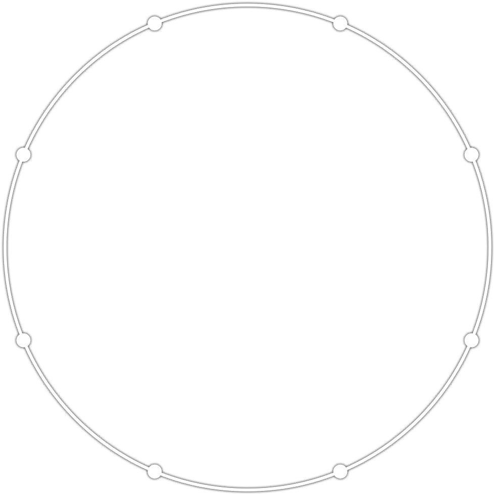

+
-
skip_previous
stop
play_arrow
keyboard_arrow_down
keyboard
▲
drag_indicator
0/0
▲
▼
✕
取代
全部取代
right_panel_close
menu
檔案
chevron_right
新建
專案總管
讀取資料夾
讀取壓縮檔
下載
加入音樂
加入影片
從影片匯入
讀取maidata
功能/工具
chevron_right
游標移至播放頭
播放頭移至游標
錄製影片
編輯音樂開頭
Tap BPM
快速生成
從Mainote抓取資料
預覽彈出
尋找與取代
切換/加入 Break (bk)
切換/加入 EX (ex)
資源管理
譜面資訊
設定
edit
復原
重作
尋找與取代
切換/加入 Break (bk)
切換/加入 EX (ex)
順時針旋轉
逆時針旋轉
180度旋轉
上下反轉
左右反轉
偏移
難度切換
ORIGINAL
Re:MASTER
MASTER
EXPERT
ADVANCED
BASIC
EASY
-
播放速度
+
拍號
/
顯示模式
simai 語法
軌道
預備拍
fullscreen
help
▲
warning
0
swap_vert
swap_horiz
rotate_left
rotate_right
sync
redo
keyboard
undo